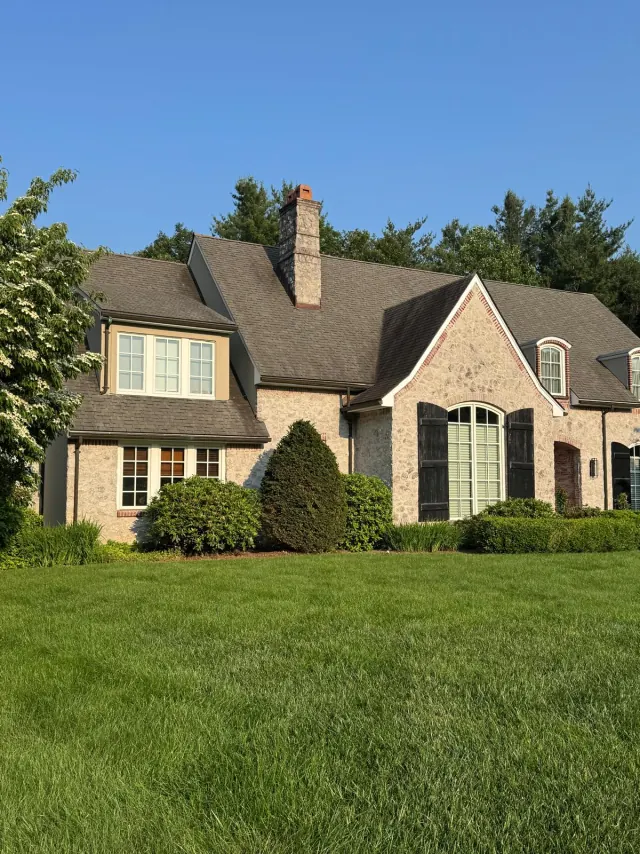

The part of your house that keeps water out.La parte de tu casa que no deja entrar el agua.
Scroll to go inside the wall: 7/8 of an inch.Desliza para entrar al muro: 7/8 de pulgada.
The surface you see.La superficie que ves.



Where the wall takes shape.Donde el muro toma forma.
The brown coat brings the surface to an even plane before the finish goes on.Esta capa empareja la superficie antes de aplicar el acabado.
- Meet in personNos reunimos en persona
We look at the job with you and talk through the scope.Vemos el trabajo contigo y revisamos qué hay que hacer.
- Get a written proposalRecibes una propuesta por escrito
We send you a written proposal for the work.Te enviamos una propuesta por escrito para el trabajo.
- Work and cleanupHacemos el trabajo y limpiamos
Once you approve the proposal, we do the work and leave the site clean.Cuando apruebas la propuesta, hacemos el trabajo y dejamos el lugar limpio.
The craftsmanship is second to none and the attention to detail is what really stood out to me during this project. They maintained excellent communication and service throughout the process, and I’m overall very satisfied with the results. Highly recommend them!La calidad de su trabajo es insuperable y la atención al detalle fue lo que más me llamó la atención durante el proyecto. Mantuvieron una comunicación y un servicio excelentes durante todo el proceso. En general, estoy muy satisfecho con los resultados. Los recomiendo mucho.
A surface with grip.Una superficie con agarre.
The grooves give the next coat something to grip. When you see cracks, we look at the surface and the layers behind it.Los surcos ayudan a que se adhiera la siguiente capa. Si ves grietas, revisamos la superficie y las capas que están detrás.

The skeleton of the stucco.El esqueleto del estuco.
Metal lath supports the stucco. The weep screed at the base gives water a way out.La malla metálica sostiene el estuco. El perfil en la base permite que salga el agua.
Licensed in Connecticut: HIC.0638080Con licencia en Connecticut: HIC.0638080
Working since 2002En actividad desde 2002
Certified applicator for Parex, Senergy, Sto and Dryvit.Aplicador certificado de Parex, Senergy, Sto y Dryvit.


Your home is behind every layer.Detrás de cada capa está tu casa.
We recently had our original stucco removed from our home due to years of water damage and then replaced. The WALLder Construction company did all the work from start to finish. It was a huge job and everyone involved in our project was meticulous throughout the entire process. The owner and his son explained everything and were easy to connect with if we ever had a question. They are good, honest people. And the workmen are artists who are exceptional in their craft. They left our house and their equipment neat and clean after each day of work. We are so happy we worked with WALLder and we highly recommend them for any future construction projects.Hace poco tuvieron que quitar el estuco original de nuestra casa por años de daños por humedad y luego reemplazarlo. WALLder Construction hizo todo el trabajo de principio a fin. Fue un proyecto enorme y todos los que participaron fueron meticulosos durante todo el proceso. El dueño y su hijo nos explicaron todo y era fácil comunicarnos con ellos si teníamos alguna pregunta. Son buenas personas y honestas. Y los trabajadores son artistas excepcionales en su oficio. Dejaban nuestra casa y su equipo ordenados y limpios al final de cada jornada. Estamos muy contentos de haber trabajado con WALLder y los recomendamos mucho para cualquier proyecto de construcción en el futuro.
We have had our home completely done in stucco by Wallder Construction. We couldn’t be happier with the work & with Walder & his men. Very courteous, arriving when planned, the expertise & answering every question & expert work. We love the outcome of our brand new looking home. We recommend Walder and his team to everyone.! Bob & Barb MaynardWallder Construction cubrió toda nuestra casa con estuco. No podríamos estar más contentos con el trabajo, con Walder y con su equipo. Fueron muy amables, llegaron cuando estaba previsto, demostraron experiencia, respondieron todas nuestras preguntas e hicieron un trabajo experto. Nos encanta ver nuestra casa como nueva. Recomendamos a Walder y a su equipo a todo el mundo. Bob y Barb Maynard